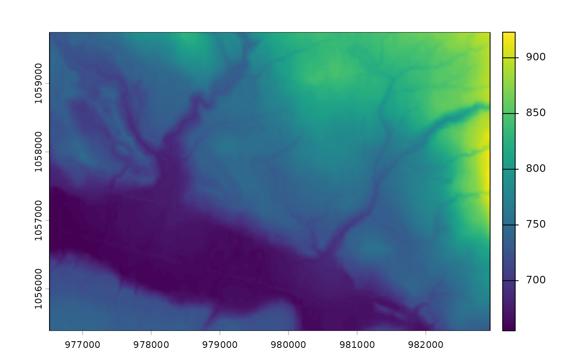

Returns a SpatRaster of elevation cropped to a buffered AOI. Source is a
local file, an HTTP COG (/vsicurl/), or an S3 COG (/vsis3/). Defaults to
MRDEM-30 — NRCan's Medium-Resolution Digital Elevation Model (30 m, all of
Canada, public S3, no auth) — the source-of-truth choice for watershed-scale
BC floodplain work as decided in rtj/docs/dem-sources.md.
Arguments
- aoi
An
sforsfcobject — polygon, lines, or points. Buffered bybuffer(viasf::st_buffer()) before crop. To crop tightly along a stream corridor (memory-efficient when the watershed-scale AOI has sparse stream coverage), pass the streamssfhere rather than the full WSG polygon.- source
Character. Path or URL for the source raster.
NULL(default) uses MRDEM-30 DTM via/vsicurl/. Local file paths,/vsicurl/https://...URLs, and/vsis3/...S3 paths all work —terra::rast()handles them identically.- buffer
Numeric. Distance in metres to buffer
aoibefore crop. Default2000.- target_crs
CRS spec recognised by
sf::st_crs()(EPSG code, WKT, PROJ string, orcrsobject).NULL(default) returns the raster in the input AOI's CRS. Reprojection happens after crop, never before — the 84 GB MRDEM COG must not be reprojected as a whole.
Value
A SpatRaster cropped to the buffered AOI extent, projected to
target_crs if it differs from the source raster's CRS.
Details
MRDEM-30 (s3://canelevation-dem/mrdem-30/mrdem-30-dtm.tif) is a single
84 GB Cloud-Optimized GeoTIFF in EPSG:3979 covering all of Canada. The
/vsicurl/ access pattern range-reads only the bytes intersecting the AOI,
so total bandwidth scales with AOI size, not the COG size.
For sub-10 m riparian-scale work where lidar coverage exists, query the
stac-dem-bc STAC catalog and pass an item's COG URL as source. See the
example below.
Examples
aoi <- sf::st_read(
system.file("testdata/streams.gpkg", package = "flooded"),
quiet = TRUE
)
# Local file (any path or URL works the same way)
dem <- fl_dem_aoi(
aoi,
source = system.file("testdata/dem.tif", package = "flooded"),
buffer = 200
)
terra::plot(dem)

if (FALSE) { # \dontrun{
# Default: MRDEM-30 DTM via /vsicurl/ — fetched lazily from NRCan S3
dem <- fl_dem_aoi(aoi, buffer = 2000)
terra::plot(dem, main = "MRDEM-30 over AOI")
# LidarBC via stac-dem-bc — sub-10 m where lidar coverage exists
bbox_4326 <- sf::st_bbox(sf::st_transform(aoi, 4326))
items <- rstac::stac("https://images.a11s.one/") |>
rstac::stac_search(
collections = "stac-dem-bc",
bbox = unname(bbox_4326)
) |>
rstac::post_request() |>
rstac::items_fetch()
if (length(items$features) > 0L) {
cog <- paste0("/vsicurl/", items$features[[1]]$assets$image$href)
dem_lidar <- fl_dem_aoi(aoi, source = cog, buffer = 100)
}
} # }